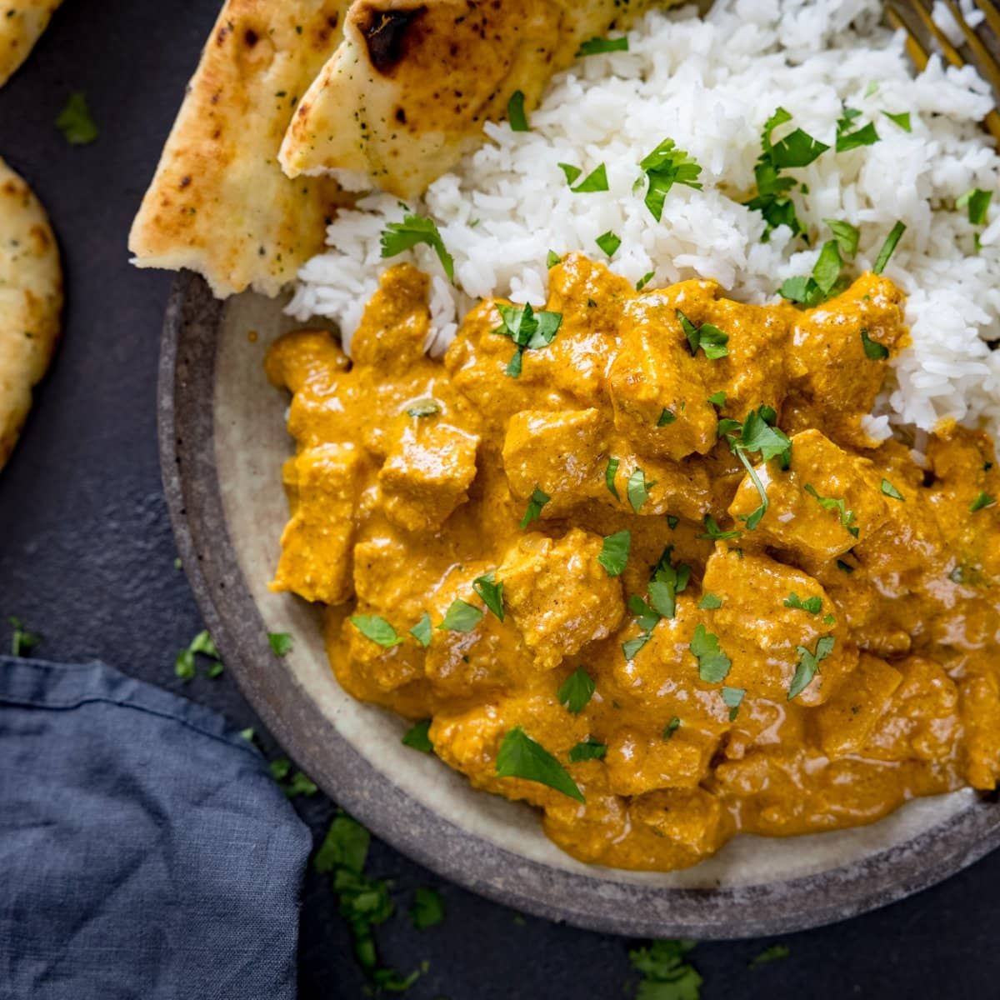

Chicken Korma

Description
Korma is prepared by marinating and then braising a meat in a yogurt or cream base. The dish is traditionally cooked on low heat for around an hour until the meat is tender and the sauce turns into a rich and creamy glaze.
When the Mughals came to India from Central Asia, they brought with them their own cuisine, including the slow braised, yogurt-based (or sometimes cream-based) dish, korma.
Ingredients
Sauce
- 12 to 15 raw almonds
- 2 to 3 green cardamom pods
- 1/2 teaspoon freshly cracked peppercorn
- 1-inch cinnamon stick
- 2 to 3 whole cloves
- 1 bay leaf
- 1 tablespoon ground coriander
- 1/2 teaspoon salt, or to taste
- 1/4 cup plain yogurt
- 1 1/2 teaspoon shredded coconut, optional
- Silvered almonds and chopped cilantro, for garnish
Marinade
- 1 1/2 pounds boneless chicken thighs, cut into 2-inch pieces
- 2 tablespoons plain yogurt
- 1/2 teaspoon ground turmeric
- 1 1/2 tablespoons ginger garlic paste
- 1/2 teaspoon salt
- 1 teaspoon cayenne pepper
Steps
-
Make the almond paste:
Soak the almonds in 1/2 cup water for approximately 2 hours. Peel the skins off. In a blender (I use Nutribullet) grind the almonds into a smooth paste. Feel free to add 1-2 tablespoons of additional water to help with a smooth grinding.
-
Marinade the chicken:
In a medium-sized mixing bowl combine yogurt, turmeric, ginger garlic paste, salt, and cayenne pepper. Using a spoon or a whisk, mix it all together. Add chicken to the marinade. Coat the chicken well with marinade. Cover with a plate and set aside in the refrigerator for 1 hour.
-
Fry the onions:
Heat oil in a Dutch oven over medium-high heat. Line a plate or sheet pan with paper towels and set this near the stove. Check to see if the oil is hot enough by dropping a strand of onion into the pot. If it sizzles then the oil is ready. Add the rest of the onions to the pot.
Cook for 7-10 minutes on medium-high heat while moving them around until the onions turn golden brown. Use a slotted spoon to take the onions out of the oil and spread into the paper-towel-lined plate or sheet pan lined to soak up the excess oil.
Set aside for later. You will use these onions to make a paste. Leave about 1 tablespoon of oil in the pot and discard the rest.
Add cardamom, peppercorn, cinnamon, cloves, and bay leaf to the pot with the oil and reduce the heat to medium. Gently stir. Add chicken, and cook, stirring occasionally, for 5-8 minutes, until the chicken turns opaque.
-
Make the onion paste:
In a blender or food processor, add the fried onions and a couple of tablespoons of water. Pulse until it becomes a coarse paste.
Add the fried onion paste, salt, and coriander to the pot with the chicken. Mix everything together. Cover and let it simmer for 5-8 minutes or until the chicken is cooked through.
-
Finish the dish:
Remove the lid, and add the yogurt, almond paste, and shredded coconut (if using). Stir well. Cook on medium-high heat (uncovered) for another 2-3 minutes, until the sauce turns creamy and oil starts to separate.
Garnish with almonds and cilantro. Serve with hot naan or lachcha paratha.